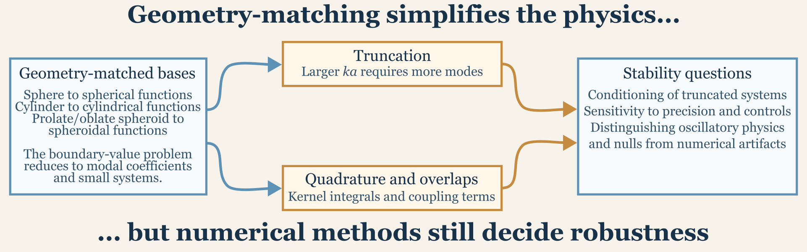

Numerical Foundations and Special Functions
Source:vignettes/numerical-foundations/numerical-foundations.Rmd
numerical-foundations.RmdIntroduction
The numerical choices documented here are motivated by the special-function and basis-expansion structure of the underlying scattering literature (Flammer 1957; Waterman 2009; Betcke and Scroggs 2021).
Several of the package models are mathematically exact only because they are written in special-function bases adapted to canonical geometries. This article is the high-level guide to those numerical ingredients.
The theory pages explain where the formulas come from. This page explains why those formulas remain computationally nontrivial even after the mathematics is settled. The central themes are basis choice, truncation, quadrature, conditioning, and the practical meaning of convergence.
This distinction matters because “exact” in a modeling article and “numerically effortless” are not the same thing. A geometry-matched modal formulation may be exact in the mathematical sense that it solves the stated boundary-value problem, but that solution still has to be evaluated with finite precision, finite truncation, and finite numerical resolution. Readers should therefore treat numerical settings as part of the reliability of the answer, not as an afterthought that becomes relevant only when something fails dramatically.

Package numerical policy
The package follows a simple numerical policy so that model arguments are not left to imply solver behavior silently.
First, compiled backends are preferred whenever the special functions
or linear algebra become a meaningful part of the runtime or stability
of the model. That is why the cylindrical, spherical, shell, and
spheroidal workflows lean on C++ and Fortran
support once the calculations move beyond small scalar expressions. Pure
R implementations remain appropriate for lightweight
algebra, initialization, and orchestration, but the intended default for
numerically heavy kernels is the compiled path.
Second, adaptive numerical controls are used when a fixed cutoff is
known to leave visible truncation error in normal package usage. The
clearest example is SOEMS, where
adaptive = TRUE extends the modal sum until the tail
contribution is negligible. When an adaptive switch is exposed publicly,
the package keeps the legacy fixed option only so that older
calculations remain reproducible.
Third, precision toggles are used only where double precision has a
clear, model-dependent failure mode. In practice, that mostly matters
for the spheroidal models. PSMS can use quadruple precision
because the spheroidal basis and the dense fluid-filled kernel systems
can become numerically delicate at higher acoustic size. By contrast,
most of the spherical and cylindrical families are intended to remain in
double precision unless a paper or benchmark comparison shows that
higher precision is materially changing the answer.
Fourth, a difference in numerical settings should be interpreted as a
difference in how faithfully the same mathematical problem is being
solved, not as a difference in target definition. Changing
adaptive, quadrature order, or precision does not create a
new scatterer. It changes the numerical resolution of the calculation.
That is why these settings should be checked through stability tests
rather than tuned opportunistically to chase a preferred spectrum.
Main ingredients
The numerical backbone of the package includes cylindrical and
spherical Bessel and Hankel functions, Legendre and associated angular
functions, spheroidal wave functions, quadrature rules for overlap
integrals, modal truncation rules, and small linear systems or, in some
cases, dense truncated matrix solves. Those ingredients appear in
different combinations across the package. SPHMS and
FCMS rely on canonical Bessel and Hankel expansions.
PSMS adds spheroidal wave functions and overlap integrals.
ESSMS layers elastic-shell algebra on top of spherical
modal structure. Approximate models such as HPA,
DWBA, and TRCM use simpler algebra, but still
depend on acoustic size, phase, and geometry-dependent numerical
evaluation.
It helps to group these ingredients by the kind of numerical burden they introduce. Some ingredients mainly affect representation, such as basis choice and modal truncation. Some mainly affect evaluation, such as oscillatory special functions and numerical quadrature. Others mainly affect stability, such as dense matrix solves and cancellation in coefficient formulas. A reader does not need to master all of those topics in full detail, but it is useful to know which kind of numerical issue a given model is most likely to encounter.
Geometry-matched bases
The strongest numerical simplification in the package comes from using a basis that matches the geometry. Spheres are expanded in spherical functions, cylinders in cylindrical functions, and prolate spheroids in spheroidal functions. That matching is what turns a boundary-value problem into a tractable modal problem. When the basis and the geometry line up, boundary conditions often decouple by mode or at least reduce to much smaller systems than a generic full-wave discretization would require.
This is the main reason the exact modal models are so powerful. They are not exact because they avoid numerics. They are exact because the geometry has already done most of the structural work.
The same point also explains why geometry mismatch can be numerically
expensive. Once the target no longer aligns naturally with the basis,
the mathematical simplifications that made the canonical model elegant
begin to disappear. That is why arbitrary or biologically segmented
bodies are often treated with approximations such as DWBA,
SDWBA, TRCM, or KRM rather than
by forcing them into a poorly matched canonical basis.
Special functions in practice
Cylindrical and spherical Bessel/Hankel functions
These functions are the basic radial building blocks for
FCMS, SPHMS, ESSMS, and parts of
other workflows. Computationally, they are important because boundary
conditions frequently depend on both the functions themselves and their
derivatives.
At a practical level, increasing acoustic size usually means more oscillatory special functions, more modes required for convergence, and a greater risk of cancellation or conditioning issues in coefficient formulas.
Readers do not need to inspect these functions directly to feel their numerical consequences. They show up indirectly as slower convergence, greater sensitivity to truncation limits, or sudden instability if a coefficient formula involves the subtraction of large nearly equal quantities.
Legendre and angular functions
For spherical problems, Legendre structure is what separates angular dependence from radial dependence. That separation is why the spherical models can be solved one order at a time rather than as a fully coupled field everywhere in space.
The practical importance of that separation is that numerical growth happens in an organized way. As acoustic size increases, more angular orders contribute, but the model still retains a mode-by-mode structure that is easier to diagnose than a generic global discretization.
Spheroidal wave functions
The prolate spheroidal model is numerically more demanding because the basis itself is more specialized. The advantage is geometric fidelity for prolate bodies. The cost is that evaluating and coupling spheroidal wave functions is more delicate than working in ordinary spherical or cylindrical bases.
This is why PSMS often deserves more numerical scrutiny
than the simpler canonical modal models. The question is not whether the
mathematics is legitimate. The question is whether the chosen truncation
and quadrature settings are resolving that more delicate basis
accurately enough for the intended calculation.
Spheroidal wave-function implementation
For the prolate spheroidal basis, the most important numerical
objects are the angular wave functions Smn() and the radial
wave functions Rmn(). Those are the actual special-function
building blocks that the rest of the spheroidal models depend on, so it
is useful to separate their evaluation from the later model-specific
algebra.
In acousticTS, those functions are evaluated through the
profcn backend in src/prolate_swf.f90, with
the corresponding C++ wrappers in src/psms.cpp
handling the extraction and rescaling needed by the exported
Smn() and Rmn() interfaces. That split of
responsibility matters because the Fortran routine computes a large
family of spheroidal quantities at once, while the package-level
functions usually want one specific angular or radial quantity and,
often, its derivative.
One detail that is easy to miss from the outside is that the Fortran
backend stores many spheroidal quantities in
mantissa-and-base-10-exponent form rather than as a single
floating-point number. This is a stability device. High-order prolate
spheroidal functions can become so large or so small that a naive
single-number representation would overflow or underflow before the
scaled value of interest is assembled. The C++ layer
therefore reconstructs the ordinary numeric value only after the backend
evaluation is complete.
The package also avoids repeatedly redoing the expensive backend
setup when several nearby spheroidal values are needed. Rather than
calling the Fortran routine separately for every single (m,n) query, the psms.cpp
wrappers request blocks of retained orders and then extract the required
angular or radial entries from that batched result. This is especially
useful internally because the exported Smn() and
Rmn() functions and the PSMS model code rely on the same
backend and therefore benefit from the same blockwise evaluation
strategy.
For Smn(), the main numerical tasks are:
- evaluating the angular function of the first kind for the requested order and degree,
- extracting the derivative when it is needed, and
- carrying the backend normalization and rescaling cleanly into the returned value.
For Rmn(), the numerical tasks are similar but slightly
broader because the radial routines must distinguish among radial kinds
and their derivatives. The package wrappers therefore handle both the
extraction of the correct radial branch and the conversion from the
backend’s scaled representation into ordinary double- or
quadruple-precision values.
The important practical point is that Smn() and
Rmn() are not numerically difficult because the formulas
are conceptually obscure. They are difficult because spheroidal special
functions are expensive and delicate at high order. The implementation
in prolate_swf.f90 and the related psms.cpp
wrappers is designed to keep those evaluations stable before any
model-specific scattering algebra is applied.
Acoustic size and truncation
Most exact-style models replace an infinite expansion with a truncated one. That is unavoidable. The practical question is not whether truncation happens, but whether the chosen truncation is large enough to give a stable answer.
As a rule, larger acoustic size means more modal content. That is why model-specific truncation rules are typically expressed in terms of quantities like ka, k a + C, or related reduced frequencies.
For example, spherical and cylindrical modal sums often use a rule of thumb such as ka plus a small safety margin, prolate spheroidal models use separate limits for the azimuthal and total orders, and shell problems inherit the same modal-growth logic but with more algebra per mode.
The practical implication is simple: a target that is easy to solve at low frequency may require significantly more work at high frequency even if the geometry does not change.
This is also where one of the most important numerical habits comes in: convergence should be checked by increasing the truncation and asking whether the result changes materially. A truncation rule of thumb is a starting point, not a proof of adequacy. If a spectrum, resonance feature, or angular response moves noticeably when the truncation is increased moderately, that result should not yet be treated as numerically settled.
Quadrature and overlap integrals
Some models do not reduce to purely closed-form modal coefficients.
PSMS is the clearest example, because kernel and overlap
terms must be evaluated numerically. In those cases, quadrature accuracy
becomes part of the model setup.
Gauss-Legendre quadrature is especially useful here because many of the relevant overlap integrals live on finite intervals and involve smooth but nontrivial products of special functions. The package therefore exposes numerical controls such as the number of integration points where the model requires them.
The practical interpretation is that some model arguments are
numerical arguments rather than physical arguments. Changing
n_integration, precision, or simplification options does
not change the target. It changes how faithfully the truncated
mathematical problem is being solved.
That distinction is worth making explicit because numerical arguments
are easy to misread. If a result changes when n_integration
changes, that does not mean the target changed. It means the previous
quadrature was not yet resolving the same target problem adequately.
Numerical settings therefore need to be interpreted as part of the
calculation quality, not as part of the target definition.
Conditioning and matrix solves
Not all modal problems are equally easy after truncation. Some models decouple into scalar mode-by-mode coefficient formulas, some reduce to very small systems for each mode, and some, especially fluid-filled spheroidal problems, require dense truncated linear solves.
This is where conditioning matters. A mathematically correct truncated system can still be numerically awkward if the basis functions become nearly dependent at the working precision or if large cancellations occur in the coefficient matrices.
That is why several theory pages mention stabilization strategies such as singular value decomposition, cautious truncation, or warnings about effective precision limits.
Readers should not interpret such stabilization language as a sign that the underlying physics is dubious. It usually means the numerical representation has become delicate enough that ordinary direct evaluation may not be robust across the whole working range. In other words, stabilization is often a mark of numerical honesty rather than a warning that the model should be discarded.
A few simple utility examples
Even outside the exact modal models, a few small acoustic utilities appear constantly in the package.
library(acousticTS)
frequency <- c(38e3, 70e3, 120e3)
sound_speed <- 1500
wavenumber(frequency, sound_speed)## [1] 159.1740 293.2153 502.6548
linear(-60)## [1] 1e-06
db(1e-6)## [1] -60Those are simple functions, but they show the two numerical domains that the package moves between constantly: physical frequency or wavenumber space and linear or logarithmic backscatter space.
This is numerically relevant because a result can look smooth or erratic depending on the domain in which it is inspected. A narrow interference feature may be obvious in the linear domain and compressed in dB, or the reverse. Numerical checking is therefore not only about whether a calculation ran. It is also about whether the result is being inspected in a domain that reveals the behavior of interest.
What users should actually check
Users do not need to inspect every special-function evaluation. They do, however, benefit from checking a few practical indicators: whether the selected model uses numerical controls such as truncation or quadrature, whether the result is stable to moderate increases in those controls, whether a very oscillatory curve is likely to be physics rather than a discretization problem, and whether the object resolution is fine enough for the model being used.
For approximate models, those checks are often mild. For exact modal
models, especially PSMS and ESSMS, they can be
central to interpretation.
A good practical check often looks like this:
- rerun with a modestly larger truncation or integration setting,
- compare the new and old curves in the same domain,
- confirm that the major features are stable rather than drifting, and
- only then interpret peaks, nulls, or small model-to-model differences physically.
If a result changes materially under that kind of moderate numerical refinement, the safer conclusion is that the calculation is not yet converged rather than that the target has revealed unexpectedly rich new physics.
Why this page is useful
Users do not need to understand every numerical detail to run the package, but they often do need to know why one model converges rapidly while another requires more care, or why a geometry-matched exact solution may still involve nontrivial numerical stabilization.
That awareness makes model comparison better as well. If two models disagree, it is important to know whether the disagreement is likely to be physical, structural, or numerical. A short numerical check is often enough to separate those possibilities before a reader starts drawing strong physical conclusions from a curve that may not yet be numerically settled.
Connection to theory pages
The theory pages derive the governing equations and modal forms. This article complements them by emphasizing the computational consequences of those derivations: orthogonality, decoupling, truncation, quadrature, conditioning, and stored special-function evaluations.
In other words, the theory pages answer “why does this formula exist?” This page answers “what is hard about evaluating it robustly?”